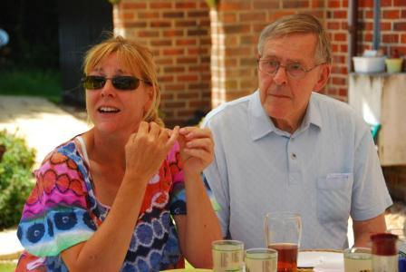

What I Have Come to Believe
|

|

Faith and BeliefWhen I worked in the computer industry I got used to the idea that faith is not belief; faith is acting on belief. Belief in itself is nothing. When we were working on the development of the internet, we believed it was possible, but we could not be sure. We could only be sure it was possible when it became a reality. So we acted as if it was becoming a reality. That was faith. Another idea I got used to is that we are not travelling through time. We are not going into the future; the future is coming into the present. We remain in the present and the future comes to us. In Christianity too, faith is acting on belief. We believe that the kingdom is possible, but we cannot be sure. We will only be sure it is possible when it becomes a reality. In the meantime we live with uncertainty. The kingdom exists in the present as an unrealised dream. So we act on our belief and trust that the dream will come true. We do this work in the present. The kingdom is not an escape from present reality. We are not going to the kingdom; the kingdom is coming to us. We remain where we are, in the world, and the kingdom comes. The kingdom is God’s gift to the world. On the Existence of GodWhen I was a child I believed in the existence of God. I was 12 when it first occurred to me that God might not exist. It was a brief thought, and then it was gone. But it came as a shock. I recall clearly that I was walking beside a pool with my older brother at the time. I did not tell anyone. In the sixth form at grammar school I studied Apologetics and Catholic Doctrine – proving that the doctrines of the Church are true. When it came to the five classical proofs of the existence of God, they cut no ice with me. There was something phony about the whole process. If I know God, then proving the existence of God is as pointless as proving the existence of my wife. If I don’t know God, then I have no idea who or what it is I am trying to prove the existence of. This is also a pointless exercise. And so trying to prove the existence of God is always a pointless exercise; it will get you nowhere. So does God exist or not? The answer is both yes and no depending on what you mean by God. My simplest definition of God is: God is love. How do you prove that love exists? How do I know that you love me? How do you know that I love you? How do we know that God loves us? How does God know that we love God? One thing Jesus said is that the world will know that God loves them if we love one another as God loves us. That means if we keep the second commandment of Jesus; to love one another as equals. If we love one another as equals, then we love one another as God loves us because God has no favourites. That is how we reveal the father’s love in the world. And that is an enormous challenge for the Christian Churches. Instead of keeping one another at a distance, people from different Churches would have to love one another as equals. There would be no hierarchy among the Churches. We would see that no Church was any better or any worse than any other Church. Denominational identity would cease to matter. On The Life of ChristAs I see it, there is only one life; the life that we all live in common. This life is like a cosmic web that God is weaving from the everyday lives of ordinary people. An individual life is nothing in itself. It does not even exist in itself. It only exists as part of the whole. Take away the whole, and the part is nothing. On the other hand, each life is unique. Each filament in the web has a unique colour and is irreplaceable. Each person can only live the life that is offered to them. If each of us lived our own lives, and trusted everyone else to live their lives, we would all get on just fine, because we would be living the life of Christ. God is One of UsIn a human family, parent and child are not different people; they are one person in two different states. In the child state, I have an inner parent. I appear to be a child on the outside, but I have the inner potential to be a parent. In the parent state, I have an inner child. I appear to be a parent on the outside, but I have the inner potential to be a child. Parent and child are two roles one person can play in life. Emotional maturity is the ability to play either role; to flow between states. The same is true in the family of God. Jesus used “father and son” to stand for the more modern “parent and child”. The father is in the son and the son is in the father. The father is divine, and the son is human. The son has divine potential, and the father has human potential. In the language of my Christian faith, to recognise the divine in human form is to recognise Christ. To recognise Christ in everyone is to recognise that we humans are all children of the same parent. We all have divine potential. Emotional maturity is the ability to recognise that we humans are all brothers and sisters to one another. We are all equal in the eyes of God. There is no hierarchy among the children of God. We relate to one another as equals. We don’t compete with one another to be the favourite child, because God has no favourites. God loves us all equally. Jesus said the son is in the father. God has the inner potential to be human. God has realised that potential; God walks the earth in human form. God is one of us; every one of us. The way we treat one another is the way we treat God. When we love one another, we love God. When we hate one another, we hate God. Divine IntimacyWhen I was a child I believed in a remote God who created the universe all alone from the outside in the distant past. This God remained outside and existed independently of the universe. Now I believe in an intimate God who is closer to me than I am to myself. This God is within me and within everyone. This God is faithful. This God goes with me wherever I go. We are inseparable. I cannot escape this God. This God knows me from the inside out, knows my most intimate thoughts and feelings, even before I do. This God loves me knowing everything I have done in the past and everything I will do in the future. This God is in everyone. This God is here now. This God is creating the universe through us here now. The cosmologists tell me that the universe is evolving, is expanding outwards from within. If I look outwards in space I look backwards in time. The beginning of time is the outermost shell of the universe. Past time is diverging. If I look inwards in space, into the depths of my own heart, I am looking forwards in time. Future time is converging. The internet converged. To make the internet possible, developments in ten different lines of technology had to converge in the year 1990. I know; I was part of that great adventure. What converges at the end of time is everything. I am part of that great adventure too. So the God who makes his home in the depths of my heart, is the God who waits at the end of time, patiently drawing all things together into one. Mission and CommunionAt the core of my personal faith as a Christian are Mission and Communion; they are two sides of the same coin. We are a communion with a mission, and our mission is communion. Our mission is to take communion out into the world; to transform the fragmented multicultural world in which we live into a communion of love. To the extent that the world is not a communion of love, our mission is incomplete. Our mission is incomplete because we are not completely one. Our mission will be complete when we are completely one. Whatever hinders communion hinders mission. It is the father’s love for us that gathers us together in communion; it is the father’s love for the world that sends us out in mission to the world. As we gather together round the father’s table on Sunday, we deepen our roots in the father’s love. As we go out in mission to the world from Monday to Saturday, we take the father’s love out into the world. The deeper our roots; the wider our mission. This is the simple mission we carry out in the small details of our ordinary everyday lives. Religion and Secular Society – Friends or Enemies?Highly religious people tend to see secular society as the enemy of religion. Highly secular people tend to see religion as the enemy of secular society. Carl Jung said our worst enemy is within us. The worst enemy of religion is within religion. The worst enemy of secular society is within secular society. Each has its own dark side. Religion is not all sweetness and light, it has a very dark side that we ignore at our peril. It was highly religious people who gave Jesus the hardest time. It was highly religious people who plotted the crucifixion of Jesus. It was a Holy Father, Pope Urban II, who roused the whole of Christian Europe to go on Crusade against the evil Empire of the Turks. It was a Holy Father who gave them their battle cry of Deus Vult, God wills it. It was in the name of God that the Crusaders massacred the entire population of towns that lay in their path; men, women and children. The most vicious wars are religious wars. I believe it was Hans Kung who said there will not be world peace until the world’s religions learn to live together in peace. I heard Rabbi Lionel Blue speaking in Winchester Cathedral say that religions need secular society because they can’t be trusted to live together in peace. Secular society provides neutral ground where religions can settle their differences by peaceful means. When secular society goes, sectarianism takes its place. Religion and secular society can be friends; they can live together in peace. Religious people can live peacefully in a secular society if they love the enemy within, their dark side. We all have a dark side. Even Holy Fathers have dark sides. And Jesus tells us to love our enemies, our dark sides. Then our dark sides become our best friends. Jesus and MeJesus was not me and I am not Jesus. But we have a lot in common. Danger, Intelligent Designer at workI sometimes think the universe should contain a giant sign saying “Danger, Intelligent Designer at work” I see the universe as a work of intelligent design in the way that the internet is a work of intelligent design. Both are work in progress. The intelligence that is designing the internet is beyond the intelligence of a single individual. It is collective intelligence distributed throughout a community of tens of thousands of people all round the globe thinking together. No single person is in control; the cooperation is instinctive, like the flock behaviour of starlings. We humans are flock animals with flock instincts. In the same way the intelligence that is designing the universe is distributed throughout the universe. This is divine intelligence. There is no super-intelligent designer outside the universe. The intelligent designer pervades the universe and is working from the inside out. The intelligent designer is inside each one of us and works through us. We humans are invited to play a small part in this great act of creation. We are invited to collaborate with the cosmic creative process.; |